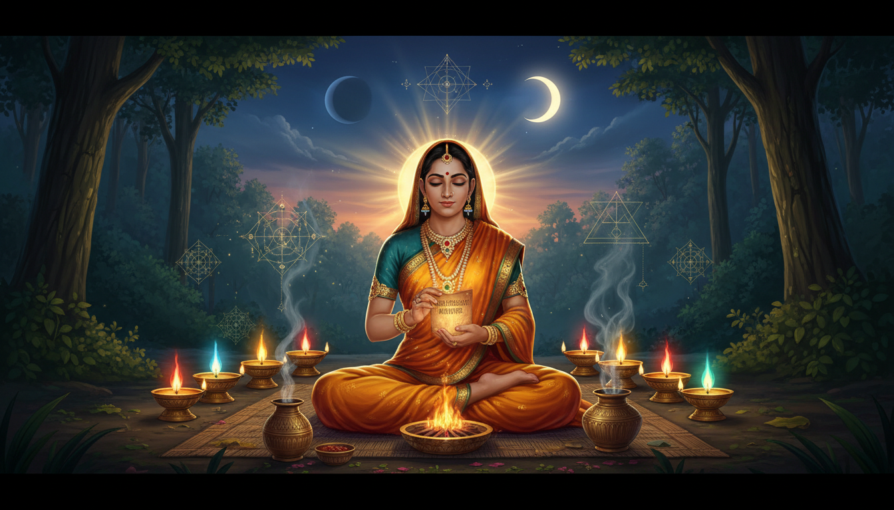

—

1. Introduction: Unlocking the Ancient Power of Vedic Sacred Science
In the sublime architecture of Vedic wisdom, numbers are far more than tools for quantitative measurement; they represent the qualitative geometry of cosmic consciousness. Known as Sankhya Parijnana (the Knowledge of Numbers), this sacred science reveals how fundamental numerical vibrations govern the movement of planets, the manifestation of divine energies, and the execution of potent remedial rites. Far from being abstract mathematics, Sankhya Parijnana bridges macrocosmic planetary shifts with microcosmic human biology, offering seekers a direct, actionable key to realigning their lives with universal harmony.
Central to this sacred framework is the law of Karma—the eternal principle of cause and effect that governs every soul’s journey through the cosmos. The Brihadaranyaka Upanishad (IV.iv.1) offers a timeless vision of this continuous transition:
"Just as a caterpillar, reaching the tip of a blade of grass, takes hold of another support and contracts itself before drawing its body forward, so too does the soul, shedding its physical frame and releasing ignorance, take hold of a new body—gradually unfolding organs and senses shaped by the impressions of its past actions (Karma)."
As we navigate our present birth, we carry the subtle karmic weight of past actions, which frequently manifests as physical distress, mental agitation, or sudden environmental turmoil. Yet, the Vedic tradition does not leave us helpless before the momentum of destiny. By tapping into sacred bead remedies (Rudraksha), planetary invocations (Graha Shanti), purificatory alchemy, and daily ethical discipline, we can neutralize negative transits, alleviate modern stress, and cultivate profound, lasting peace.
—
2. Understanding Cosmic Suffering: Overcoming the Tapatraya (Three Afflictions)
The Vishnu Purana explains that human suffering is not arbitrary; it arises from three distinct vectors of karmic reaction known as the Tapatraya (the Three Afflictions). Understanding these root causes enables us to apply targeted remedies:
- Adhyatmika (Internal Suffering): Difficulties originating from within one’s own physical structure and mental constitution. This is subdivided into:
- Shaaririka (Physical Ailments): Bodily disorders affecting the head, digestive fire, heart, respiratory system, vision, limbs, skin, and pelvic organs, as well as systemic imbalances of blood and vital fluids.
- Manasika (Psychological Imbalances): Mental disturbances driven by the internal afflictions of Kama (uncontrolled desire), Krodha (anger), Bhaya (fear), Dwesha (hatred), Lobha (greed), Moha (infatuation), Vishada (depression), Shoka (grief), Asuya (envy), Apamana (dishonor), Irshya (ill-will), and Matsara (jealousy).
- Adhibhoutika (External Physical Suffering): Troubles inflicted by outside living entities. This includes physical harm caused by aggressive animals, venomous creatures like scorpions and serpents, predatory individuals, as well as subtle entities such as evil spirits (Pishachaas) and negative energies (Rakshasaas).
- Adhidaivika (Cosmic or Natural Suffering): Uncontrollable disruptions caused by natural, environmental, and celestial forces. These encompass extreme heat, freezing cold, severe winds, heavy rain, droughts, floods, earthquakes, cyclones, and lightning strikes.
Planetary transits (Gocharas) act as the cosmic triggers for these three forms of suffering, releasing karmic reactions when our personal horoscope aligns with adverse planetary positions. To mitigate these impacts, Vedic science prescribes specific planetary remedies (Graha Shanti) to restore dynamic equilibrium across all levels of life.
—
3. Sacred Bead Remedies: Navigating Planetary Transits with Rudraksha
Rudraksha beads—derived from the seeds of the Elaeocarpus ganitrus tree—are revered as physical manifestations of Lord Shiva’s divine compassion. Sacred tradition recounts that Maha Deva entered a state of intense, unwavering contemplation to create the formidable Aghora weapon required to destroy the demon Tripurasura. After keeping his eyes unblinking for years, tears of deep compassion fell to the earth, giving birth to the first Rudraksha trees.
From Shiva’s divine vision, thirty-eight distinct varieties of sacred seeds emerged:
- Surya Netra (Sun Eye / Right Eye): Yielded 12 varieties of yellow-hued beads, infusing solar vitality.
- Soma Netra (Moon Eye / Left Eye): Yielded 16 varieties of white-hued beads, granting soothing lunar peace.
- Agni Netra (Fire Eye / Third Eye): Yielded 10 varieties of black-hued beads, bestowing transformative fiery protection.
Wearing authentic Rudraksha beads establishes a bio-electric sheath around the body, insulating the subtle nerve channels (Nadis) against cosmic afflictions, heart trouble, metabolic disorders, and planetary misalignments.
Prescribed Rudraksha Mukhis, Ruling Planets, Deities, and Mantras
| Rudraksha Type (Mukhi) | Ruling Planet (Graha) | Associated Deity (Deva/Devi) | Remedial & Health Benefits | Sacred Chant (Mantra) |
|---|---|---|---|---|
| 1 Mukhi | Surya (Sun) | Shiva | Grants power, wealth, and fame; wards off heart disease and severe sins. | Om Namah Shivaaya Om Hreem Namah |
| 2 Mukhi | Chandra (Moon) | Ardhanareeshwara | Enhances mental peace, emotional balance, and inner mystic intuition. | Om Namah |
| 3 Mukhi | Mangala (Mars) | Agni (Fire) | Boosts physical health and divine energy; cleanses sins of severe violence. | Om Kleem Namah / Om Namah Shivaaya Namah |
| 4 Mukhi | Budha (Mercury) | Brahma | Relieves nervous tension, mental disorders, speech defects, and paralysis. | Om Hreem Namah |
| 5 Mukhi | Guru (Jupiter) | Rudra | Destroys internal enemies; aids liver, kidney health, diabetes, and obesity relief. | Om Hreem Namah |
| 6 Mukhi | Shukra (Venus) | Kartikeya | Sharpens concentration and confidence; supports reproductive health and family life. | Om Hreem Hroom |
| 7 Mukhi | Shani (Saturn) | Maha Lakshmi | Relief from muscular pain and lethargy; grants prosperity (wear with red thread). | Om Huum Namaha |
| 8 Mukhi | Rahu | Ganesha | Sharpens business acumen and focus; alleviates lung and skin disorders. | Om Ganeshaya Namah |
| 9 Mukhi | Ketu | Durga | Bestows fearlessness and physical strength; relieves bowel and pulmonary issues. | Om Hreem Hum Namah |
| 10 Mukhi | Pacifies All 9 Planets | Maha Vishnu | Pacifies afflictions from all 9 planets; destroys evil spirits (Pisachas) and goblins. | Shri Narayaneya Shri Vaishnavey Namah |
| 11 Mukhi | Universal Devas | Ekadasha Rudras / Hanuman | Protects neuro-physiology; grants yogic discipline, devotion, and deep wisdom. | Om Shri Rudraaya Namah |
| 12 Mukhi | Surya (Sun) | Dwadasha Adityas | Radiates leadership, self-confidence, high administrative status, and vigor. | Recite Sun Mantras (Surya Stotras) |
| 13 Mukhi | Shukra (Venus) | Indra & Kamadeva | Unlocks material comforts, charismatic attraction, and refined creative gifts. | Specific deity chants (Indra/Kamadeva) |
| 14 Mukhi | Shani (Saturn) | Maha Deva | Grants supreme spiritual contentment in present life (Iham) and liberation (Param). | Om Namah Shivaaya |
Sacred Protocol for Wearing Rudraksha
- Timing of Consecration: Purify and wear your beads during highly auspicious astrological windows, such as Sankranti transits, lunar or solar eclipses, Full Moon (Pournami) days, or sacred Mondays.
- Dietary Restrictions: While wearing Rudraksha, one must refrain strictly from consuming alcohol, meat, tobacco, onions, and garlic, as these introduce heavy, Tamasic impurities into the energy field.
- Personal Purity: Beads must be removed during intimate marital relations (mating) and during periods of bodily impurity or mourning, as failing to observe these boundaries disrespects the sanctity of Lord Shiva.
—
4. Planetary Remedies (Graha Shanti): Aligning with Planetary Energies
Part A: The Navagraha Cosmic Alignment
To remediate planetary afflictions (Doshas), the practitioner should meditate upon the visual attributes, vehicles (Vahanas), associated pilgrimage shrines (Kshetras), and powers of the nine celestial lords (Navagrahas):
- Surya (Sun): Seated upon a pink lotus within a golden chariot drawn by seven horses; holds two lotus blossoms. Destroys darkness and past sins, bestowing bodily vitality and high leadership (Honored at the Suryanar Kovil Temple).
- Chandra (Moon): Radiant white in attire and form, holding a mace (Gada) and protective gesture (Varada Mudra), riding a white chariot. Governs mental peace, cellular fluids, and medicinal herbs. (At the Tingalur Kailasanathar Temple, Chandra's grace cured a devotee's son of lethal snake venom).
- Mangala / Angaraka (Mars): Glowing with a deep blood-red hue, holding a spear (Shakti), trident (Shula), and mace (Gada). Born of the Earth, he grants courage, physical stamina, and blood purity (Worshipped at Vaitheeswara Koil for medical healing).
- Budha (Mercury): Emerald-hued with a golden glow, riding a lion, holding a sword, shield, and mace. Controls analytical intellect, high learning, diplomatic skill, and emotional balance under pressure (Worshipped at the Swetharanyeswarar Temple in Tiruvengadu).
- Guru / Brihaspati (Jupiter): Golden-complexioned mentor of the Devas, holding a staff (Danda), rosary (Akshasutra), and water vessel (Kamandalu). Bestows spiritual wisdom, higher philosophy, and righteousness (Worshipped at the Alangudi Apathsahayesvarar Temple).
- Shukra (Venus): Pure white in attire, holding a staff, rosary, and vessel. Master of fine arts, aesthetics, wealth, and systemic balance (Worshipped at the Kanjanor Agniswarar Temple).
- Shani (Saturn): Deep blue (Indraneelamani) in color, riding a vulture (Grudhra), armed with a bow, arrows, and trident. Governs karmic discipline, endurance, longevity, and spiritual humility (Honored at Shani Shingnapur and Mandapalli).
- Rahu: Dark and fierce visage, seated upon a blue throne, wielding a sword, shield, and trident. Neutralizes illusions, karmic blockages, and snake afflictions (Sarpa Doshas) (Worshipped at Tirunageswaram and Sri Kalahasti).
- Ketu: Smoke-colored (Dhumra), riding a vulture, holding a mace. Governs spiritual detachment, subtle intuition, and liberation (Worshipped at the Naganatha Swami Temple in Keelaperumpallam).
Part B: Occult Goddess Remedies for Specific Planetary Doshas (Ashta Bhairavis)
When severe planetary transits produce overwhelming karmic obstacles, invoking the specific manifestations of the Divine Mother neutralizes suffering and restores inner power:
- Mahakali: Invoked to neutralize severe Shani Dosha (Saturn afflictions and karmic delays).
- Neela Saraswati: Worshipped to mitigate Brihaspati Dosha (Jupiter afflictions, intellectual stagnation, and guidance loss).
- Lalitha Tripura Sundari (Shodashi): Invoked to correct Budha Dosha (Mercury afflictions, nervous tension, and speech disorders).
- Kamala Devi: Worshipped to alleviate Shukra Dosha (Venus afflictions, financial strain, and relationship discord).
- Tripura Bhairavi / Kaala Bhairavi: Invoked for overcoming formidable obstacles, internal fear, and aggressive opponents.
- Dhumavati (Alakshmi): Prayed to for neutralizing black magic, psychic disturbances, unexpected poverty, and deep misfortune.
- Bagalamukhi (Peetaambari): Invoked for securing quick success in legal battles, court litigation, and silencing toxic opposition.
- Matangi: Worshipped to resolve deep-seated family discord, interpersonal disharmony, and domestic unhappiness.
- Chhinnamastaka: Prayed to for unlocking radical willpower, laser focus, and complete mastery over sensory desires.
—
5. Purification & Occult Energy Rituals You Can Perform
The Panchagavya Cleansing Ritual (Five Cow Products Purificatory Mix)
Panchagavya is an ancient Vedic alchemical mixture combining five consecrated products of the sacred cow with sacred grass water (Kushodaka). It acts as an internal fire oblation (Internal Agnihotra), burning away deep-seated karmic impurities stored within physical tissues.
Formula:
Panchagavya = Gomutra (Cow Urine) + Gomaya (Cow Dung) + Ksheera (Cow Milk) + Dhadhi (Cow Curd) + Sarpih (Cow Ghee) + Kushodaka (Sacred Grass Water)
Each ingredient corresponds to a specific cosmic element, deity energy, and Vedic chant:
- *Cow Urine (Gomutra): Imbued with Varuna* energy; consecrated using the Gayatri Mantra.
- *Cow Dung (Gomaya): Imbued with Agni* energy; consecrated using the Gandhadwaaraa Mantra.
- *Cow Milk (Ksheera): Imbued with Chandra* energy; consecrated using the Aa Pyaayasva Mantra.
- *Cow Curd (Dhadhi): Imbued with Vayu* energy; consecrated using the Dadhikravinno Mantra.
- *Cow Ghee (Sarpih): Imbued with Surya* energy; consecrated using the Tejosi Shukramasi Mantra.
- *Sacred Grass Water (Kushodaka): Consecrated water prepared with Kusha* grass; mixed using the Devasya Twaa Mantra.
Method & Spiritual Mechanism: The components are stirred together using the Aapohishthaa Mantra and blessed with the Maana Nastoke Mantra. When consumed while chanting the sacred Pranava (Om), this consecrated blend acts as an internal purificatory combustion. It penetrates deep into the cellular structure, dissolving toxic karmic residues stored in the blood, bone marrow, and skin pores.
Sacred Bathing Rituals (Trividha Snaanas)
Bathing in Vedic tradition is not merely physical hygiene; it is an energetic cleansing of the aura. Baths are categorized into three spiritual classes: Nitya (daily compulsory purificatory bath), Naimittika (periodic or event-contingent bath), and Kaamya (desire-fulfilling bath for specific merit).
- Astrological & Power Windows: Performing sacred baths during Kartika Pournami, the month of Maagha, solar/lunar eclipses (Grahana), and Ratha Saptami generates immense spiritual merit (Punya).
- *Dawn Cleansing (Pratah Snaana): Bathing before sunrise cleanses subtle impurities, wards off bad dreams, and removes subconscious lethargy accumulated during sleep. Chanting water-purification mantras such as Apohishtha Mayobhuvah* amplifies the bath's bio-energetic resonance.
Energy Alignment through Pancha Bhuta Lingas (Five Element Shrines)
The human body is composed of five foundational elements (Pancha Bhutas), which correspond directly to five self-manifested (Swayambhu) Linga shrines across Southern India:
- *Earth (Prithvi Linga): Ekamreshwara* at Kanchipuram. Represents bodily structure and stability. Legend recalls that Devi Parvati molded a hand-sized Linga shaped like a plantain flower beneath a mango tree; to this day, it retains the subtle imprints of her divine embrace and sacred bangles.
- *Water (Aapas Linga): Jambukeshwara* at Tiruvanaikaval. Submerged beneath a natural spring under a Jambu tree, balancing physical fluids and emotional harmony.
- *Fire (Tejas Linga): Arunachaleshwara at Tiruvannamalai. Manifested as an infinite pillar of fire (Agni Stambha*), dissolving ego and bestowing spiritual awakening.
- *Air (Vayu Linga): Sri Kalahasteshwara at Kalahasti. Represents life-breath (Prana). Famed for neutralizing intense Rahu-Ketu afflictions and Sarpa Doshas*.
- *Ether / Space (Akasha Linga): Nataraja at Chidambaram. Represents pure unmanifest consciousness (Chidambara Rahasyam), home to Shiva's eternal cosmic dance (Tandava*).
—
6. Step-by-Step Actionable Remedial Guide: Daily Routine for Cosmic Harmony
Incorporate this structured 5-step checklist into your daily morning routine to harmonize planetary forces and maintain high spiritual frequency:
- *Morning Awakening & Cleansing (Brahma Muhurta):*
- Wake up during Brahma Muhurta (approximately 1.5 hours before sunrise).
- Perform your morning bath (Pratah Snaana) while reciting water-purification mantras (Apohishtha Mayobhuvah) or divine names.
- Apply sacred markings—Vibhuti (sacred ash), Gandha (sandalwood paste), or Kumkuma—upon the forehead center to stimulate the Ajna Chakra.
- Daily Planetary & Deity Chanting:
- Recite Sage Vyasa’s universal Navagraha pacification verse every morning to balance all nine planetary transits:
"Adithyaya Somaaya Mangalaaya Budhaayacha,
Guru Shukra Sanirbhyascha Rahavey Ketavey Namah."
- *Mindful Astrological Timing (Rahu Kaala):*
- Avoid initiating critical financial transactions, legal signings, or new material ventures during Rahu Kaala (a shifting 1.5-hour daily window governed by Rahu).
- Mnemonic Rule to Track Rahu Kaala: Remember the traditional phrase: "Mother Saw Father Wearing The Two Socks" to easily recall the daily schedule:
| Day of the Week | Rahu Kaala Window |
|---|---|
| Monday (Mother) | 7:30 AM – 9:00 AM |
| Saturday (Saw) | 9:00 AM – 10:30 AM |
| Friday (Father) | 10:30 AM – 12:00 PM |
| Wednesday (Wearing) | 12:00 PM – 1:30 PM |
| Thursday (The) | 1:30 PM – 3:00 PM |
| Tuesday (Two) | 3:00 PM – 4:30 PM |
| Sunday (Socks) | 4:30 PM – 6:00 PM |
- *Wearing Your Astrological Rudraksha:*
- Wear your recommended Mukhi bead in direct contact with the skin (around the neck, heart, head, or arms).
- Observe strict personal discipline—avoiding meat, alcohol, garlic, onions, and non-celibate acts while wearing the sacred bead.
- *Practicing Core Ethics (Yama & Niyama):*
- Cultivate Trikarana Shuddhi—complete purity and alignment across thought (Mano), word (Vaacha), and deed (Karmana).
- Observe the five foundational principles of Yama: Non-violence (Ahimsa), Truthfulness (Satya), Non-stealing (Asteya), Restraint (Brahmacharya), and Non-possessiveness (Aparigraha).
—
7. Conclusion & Key Takeaways
The profound core of Sankhya Parijnana is expressed in the ancient Vedic maxim Ekam Anantam—Infinite Unity behind All Diversity. Numbers, planetary transits, elemental shrines, and deity manifestations are not disparate forces; they are cosmic expressions of one Supreme Reality (Narayana / Brahman). By understanding the geometric order underlying planetary movements, we can transform karmic challenges into stepping stones for spiritual awakening.
Key Actionable Takeaways:
- Identify and Neutralize Afflictions: Diagnose whether your life challenges stem from Adhyatmika (internal), Adhibhoutika (external), or Adhidaivika (cosmic) causes, applying specific Graha Shanti and Bhairavi remedies.
- *Harness Rudraksha Bio-Energy: Wear the specific Mukhi* bead prescribed for your astrological transits directly against the skin, honoring strict rules of dietary and personal purity.
- Purify Your Subtle Architecture: Use the internal fire oblation of Panchagavya and regular Pratah Snaana to cleanse accumulated karmic impurities from your blood, bones, and energy channels.
- Align Actions with Cosmic Cycles: Avoid initiating major material activities during Rahu Kaala, maintain your daily Navagraha chant, and practice flawless harmony of thought, word, and deed (Trikarana Shuddhi).
May the divine light of the Vedic seers illuminate your path, shielding you from planetary afflictions and bestowing lasting health, peace, and spiritual realization.
Sources
No source URLs were returned by NotebookLM for this run.